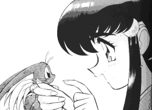

Site History |
This is a short chronological history of this site. You will learn how this site came from a small collection of fan fiction in a subsection of my page to become the biggest collection of Tenchi FanFics on the net! |
A Fledgling Archive (Version 1.0)
This archive was born on March 8, 1997 as a sub-section to my Tenchi Muyo Page on AOL. There wasn't much fics out there at the time so the collection was a meager dozen fics. currently all the fan fics were ZIPped up to save space (Version 1.0). I only had 2 MB of web space.
The Organization Format at the time was:
index.html --> fanfic.html --> im-ryoko.zip
I have found that people had tons of problems with the compression of fan fics, thus I used simple TXT format when my site was relocated to a server with more space.
The GeoCities Page (Version 1.1)
On August 29, 1997, I moved my main page to GeoCities, which still exists there today. There, I decided to stick with simple TXT format (Version 1.1). Slowly my page began to grow in content and the number of fics that it held.
The Organization Format at the time was:
index.html --> fanfic.html --> im-ryoko.txt
But over time the archive slowly grew larger, and larger. And by the new year, I found it rather difficult to navigate. Thus, I had to partition the archive and change the way it was sorted. First the lemons were separated from the main archive (Version 1.2), then the Crossovers (Version 1.3), and finally the Misc. section was added (Version 1.4). This was implemented gradually in the Winter of 1998.
The Organization Format at the time was:
index.html --> fanfic.html --> reg.html --> im-ryoko.txt
As time progressed, the archive yet again became to grow as a faster rate. more and more fan fics seemed to flow in the Winter/Early Spring of 1998. In this time frame the Voting Booth was implemented on March 14, 1998. A counter was also added.
I then was faced with some startling facts. I was getting a lot more hits on my fan fic page than my main page. I was getting dangerously close to the file capacity of my server. And again, the Fan Fic archives were getting unruly Thus, I decided while on spring break to reformat my page and make it an independent site.
An Independent Page (Version 2.0)
It took a lot of work, but I moved my fan fic archive to fujiko.simplenet.com on April 4, 1998. This new site was a greatly improved version (Version 2.0) of my site. I sorted my archive so that all fic with multiple chapters will now have their own sub index. Originally I listed every multi-part fic on the main indexes, but this proved to unnecessarily lengthened the main indexes. After that I decided to time stamp all updated fics and keep track of when I updated my page.
The Organization Format at the time was:
index.html --> fanfic.html --> reg.html --> r-im.html --> im-ryoko.txt
With the new page came a lot of features an independent site needed. A frames version and a frames with Java version was added. A counter was added and a midi Jukebox was added to this new Version 2.0. A banner came later. Also teh Use of Mihoshi and Kiyone as a background image.
Mirror Mirror... and a Switch-a-Roo
As time progressed I moved to kawaii.simplenet.com since the owner of fujiko.simplenet.com wanted to change her server name. I would like to thank her for allowing me to use her account. After that, I decided to make a mirror of my page available at Animanga.com in May 24, 1998. It is an exact mirror of my main page with a minor changes that makes sure you are using a mirror.
Luckily I did because a few days later, Simplenet threatened to charge $200 a month for service. Kawaii.simplenet.com was defined as a "high resource user". Thus I had to move my site once again. You can't have everything you wanted... Now it resides at its current location at Xoom.com as of June 8, 1998.
Version 3.0
Now it is summer, and I finally have the time to do a revision in format and organization of this site. Thus this update to version 3.0. I revised the general format of the page, changed graphics, added a few more sub sections and other things. There is a navigation index to some of the pages. I hope the Yellowish color scheme looks great.
I have added the following lists of features for Version 3.0:
I felt like keeping Mio & Kio as Un-official spokes people for this page. Thus their continued use in the background and the banners. Also in their role in the short intro. fic.
Version 3.1
Yes 3.1 heh heh, I did some formatting changes for web page. I have spent countless hours reviseing the format of this page a bit. As usual I have added more fan fics. Enjoy!
Version 3.1 includes the following changes.
Over Fifth Thousand Hits
|
There has been over 50,000 hits to the main archive since 4/4/1998. Also note, between 1/1/98 to 4/4/98 there was 14,114 hits to the archive while at Geocities. Thank you all for making this possible. Please sign the guestbook to show your support! |
After confirmation, Navaash was the 50,000th visitor to the
archive on 10/17/1998. here is what he has to say:
"I would make a speech, but this isn't the Oscars, just something far better and more intellectually fun. ^_-" |
|
The One Hundred Thousandth Visitor
The 100,000th visitor to the archive won a prize. Find out more about it at the page: "100,000 Hits at the Archive"
Version 4.0 "The New Domain"
On September 1st, 1999, the archive finally moved to it's new home at tmffa.com. Not all features that I had wanted were implemented but many changes were implemented. The following page summarizes the changes: "A New Domain"
Christmas and Y2K
The holidays were celebrated at the archive. This was the fist time I had ever decided to do a temporary theme change. An example of the change is the following three files. Title Page, Intro Page and Main Menu. Prehaps I will do more in the future. I woud like to thank Bobert and Seion for thir work.
TMFFA T-Shirt
Durring the summer of 2001, I decided to make a T-shirt for the TMFFA. It was the first time that I actually had some mercandise for the archive.
There was a design contest where Jeff Rayder's Design came on top! His winning design is the image to the right. Michael McAvoy was second. I decided to use his design for the front logo of the shirt.
More information of the TMFFA T-shirt contest, design, and results can be viewed at the following page.
An Uncertain Future
The future is one big mystery, but I will continue to archive the fics in a timely manner, less real life gets me first. ^__- I am still considering other changes and revisions to this archive. When time permits, I will implement any changes. Until then, Ja for now...